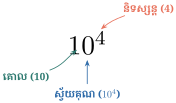

- កំណត់សញ្ញាណនិងនិយមន័យស្វ័យគុណ \(\displaystyle a^n\)
- ធ្វើប្រមាណវិធីគុណនិងចែកស្វ័យគុណដែលមាននិទស្សន្តជាចំនួនគត់រ៉ឺឡាទីប
- កំណត់លក្ខណៈនៃស្វ័យគុណ
- កំណត់ទម្រង់ស្តង់ដានៃស្វ័យគុណ \(\displaystyle A \times 10^n\) ដែល \(\displaystyle 1 \le A < 10\) ជាចំនួនគត់រ៉ឺឡាទីប
- កំណត់ឫសការេនិងឫសគូប ។
1. សញ្ញាណស្វ័យគុណ
ឧទាហរណ៍ ៖ ចំនួន 10 000 អាចសរសេរជាផលគុណ \(\displaystyle 10~000 = 10 \times 10 \times 10 \times 10\) ហើយគេក៏អាចសរសេរផលគុណនេះឱ្យកាន់តែខ្លីដោយប្រើនិទស្សន្ត ។ និទស្សន្តប្រាប់អំពីចំនួនដងនៃចំនួនដែលត្រូវគុណហៅថា គោល ។ ដូច្នេះ \(\displaystyle 10 \times 10 \times 10 \times 10\) សរសេរជា \(\displaystyle 10^4\) ។

- ចំនួន 10 ហៅថា គោល
- ចំនួន 4 ហៅថា និទស្សន្ត
- ចំនួន \(\displaystyle 10^4\) ហៅថា ស្វ័យគុណ ។
បើ \(\displaystyle a\) ជាចំនួនសនិទាននិង \(\displaystyle n\) ជាចំនួនគត់វិជ្ជមាន នោះគេបាន ៖
សរសេរផលគុណខាងក្រោមជាស្វ័យគុណ រួចប្រាប់គោលនិងនិទស្សន្ត ៖
- ក. \(\displaystyle 4 \times 4 \times 4 \times 4 \times 4 \times 4\)
- ខ. \(\displaystyle \underbrace{a \times a \times a \times \dots \times a}_{2024 \text{ កត្តា}}\)
ដំណោះស្រាយ ៖
- ក. \(\displaystyle 4^6\) (គោល 4, និទស្សន្ត 6)
- ខ. \(\displaystyle a^{2024}\) (គោល \(\displaystyle a\), និទស្សន្ត 2024) ។
សរសេរស្វ័យគុណជាផលគុណកត្តាដូចគ្នា រួចគណនា ៖
- ក. \(\displaystyle 2^5 = 2 \times 2 \times 2 \times 2 \times 2 = 32\)
- ខ. \(\displaystyle \left(\frac{2}{3}\right)^3 = \frac{2}{3} \times \frac{2}{3} \times \frac{2}{3} = \frac{8}{27}\)
- គ. \(\displaystyle (-3)^3 = (-3) \times (-3) \times (-3) = -27\)
- ឃ. \(\displaystyle (-2)^6 = (-2) \times (-2) \times (-2) \times (-2) \times (-2) \times (-2) = 64\) ។
សម្គាល់ ចំពោះចំនួនគត់ \(\displaystyle n\) ៖
- សរសេរផលគុណជាស្វ័យគុណ ៖ \(\displaystyle x \cdot x \cdot x \cdot x \cdot x \cdot x = x^6\)
- គណនា ៖ \(\displaystyle 3^4 = 81\), \(\displaystyle \left(-\frac{1}{2}\right)^6 = \frac{1}{64}\), \(\displaystyle (-2)^7 = -128\) ។
2. ប្រមាណវិធីលើស្វ័យគុណ
2.1. ផលគុណស្វ័យគុណដែលមានគោលដូចគ្នា
ដើម្បីគុណស្វ័យគុណដែលមានគោលដូចគ្នា គេរក្សាទុកគោលឱ្យនៅដដែល រួចបូកនិទស្សន្ត ៖
ឧទាហរណ៍ ៖ \(\displaystyle 2^3 \times 2^4 = 2^{3+4} = 2^7 = 128\) ។
2.2. ផលចែកស្វ័យគុណដែលមានគោលដូចគ្នា
ដើម្បីចែកស្វ័យគុណដែលមានគោលដូចគ្នាខុសពីសូន្យ គេរក្សាទុកគោល រួចដកនិទស្សន្ត ៖
សម្គាល់ ៖
- ស្វ័យគុណសូន្យ ៖ \(\displaystyle a^0 = 1\) (\(\displaystyle a \ne 0\))
- និទស្សន្តអវិជ្ជមាន ៖ \(\displaystyle a^{-n} = \frac{1}{a^n}\) (\(\displaystyle a \ne 0\)) ។
2.3. ស្វ័យគុណនៃស្វ័យគុណ
ដើម្បីគណនាស្វ័យគុណនៃស្វ័យគុណ គេរក្សាទុកគោល រួចគុណនិទស្សន្ត ៖
2.4. ស្វ័យគុណនៃផលគុណ និងស្វ័យគុណនៃផលចែក
ចំពោះគ្រប់ចំនួនសនិទាន \(\displaystyle a, b\) និងចំនួនគត់រ៉ឺឡាទីប \(\displaystyle n\) ៖
3. ទម្រង់ស្តង់ដានៃស្វ័យគុណ
ទម្រង់ស្តង់ដានៃចំនួនមួយគឺ ៖
ដែល \(\displaystyle 1 \le A < 10\) និង \(\displaystyle n\) ជាចំនួនគត់រ៉ឺឡាទីប ។
ឧទាហរណ៍ ៖
- \(\displaystyle 45\,000 = 4.5 \times 10^4\)
- \(\displaystyle 0.000\,32 = 3.2 \times 10^{-4}\) ។
4. ឫសការេ និងឫសគូប
- ឫសការេនៃចំនួនវិជ្ជមាន \(\displaystyle a\) គឺចំនួន \(\displaystyle x\) ដែល \(\displaystyle x^2 = a\) តាងដោយ \(\displaystyle \sqrt{a}\) ។
- ឫសគូបនៃចំនួន \(\displaystyle a\) គឺចំនួន \(\displaystyle x\) ដែល \(\displaystyle x^3 = a\) តាងដោយ \(\displaystyle \sqrt[3]{a}\) ។
លក្ខណៈនៃឫស ៖ ចំពោះ \(\displaystyle a \ge 0, b > 0\) ៖
លំហាត់
សរសេរផលគុណខាងក្រោមជាស្វ័យគុណ រួចប្រាប់គោលនិងនិទស្សន្ត ៖
- ក. \(\displaystyle 6 \times 6 \times 6 \times 6 \times 6 \times 6 \times 6\)
- ខ. \(\displaystyle (-8) \times (-8) \times (-8) \times (-8) \times (-8) \times (-8)\)
- គ. \(\displaystyle \underbrace{a \times a \times a \times \dots \times a}_{n \text{ កត្តា}}\)
- ឃ. \(\displaystyle \underbrace{\left(-\frac{ab}{c}\right) \times \left(-\frac{ab}{c}\right) \times \dots \times \left(-\frac{ab}{c}\right)}_{n \text{ កត្តា}}\)
មើលដំណោះស្រាយ
- ក. \(\displaystyle 6^7\) មានគោល \(\displaystyle 6\) និងនិទស្សន្ត \(\displaystyle 7\)
- ខ. \(\displaystyle (-8)^6\) មានគោល \(\displaystyle -8\) និងនិទស្សន្ត \(\displaystyle 6\)
- គ. \(\displaystyle a^n\) មានគោល \(\displaystyle a\) និងនិទស្សន្ត \(\displaystyle n\)
- ឃ. \(\displaystyle \left(-\frac{ab}{c}\right)^n\) មានគោល \(\displaystyle -\frac{ab}{c}\) និងនិទស្សន្ត \(\displaystyle n\) ។
សរសេរស្វ័យគុណខាងក្រោមជាផលគុណកត្តាដូចគ្នា រួចគណនា ៖
- ក. \(\displaystyle (4^3)(2^2)\)
- ខ. \(\displaystyle (-8^2)(-7^3)\)
- គ. \(\displaystyle (-3^4)(-6^3)\)
- ឃ. \(\displaystyle (7^3)(-12^3)\)
មើលដំណោះស្រាយ
- ក. \(\displaystyle (4 \times 4 \times 4)(2 \times 2) = 64 \times 4 = 256\)
- ខ. \(\displaystyle (-64)(-343) = 21\,952\)
- គ. \(\displaystyle (-81)(-216) = 17\,496\)
- ឃ. \(\displaystyle (343)(-1728) = -592\,704\) ។
សរសេរកន្សោមខាងក្រោមជាផលគុណកត្តាដូចគ្នារួចគណនា ៖
- ក. \(\displaystyle (4^3)(-3^2)\)
- ខ. \(\displaystyle \frac{4^3 - 2^2}{3(2^2)}\)
- គ. \(\displaystyle (-2^3)(3^2)(-5^2)\)
- ឃ. \(\displaystyle 5^3 - 2^4 - 3^3\)
មើលដំណោះស្រាយ
- ក. \(\displaystyle (64)(-9) = -576\) (បើ \(\displaystyle (-3)^2\) គឺ \(\displaystyle 64 \times 9 = 576\))
- ខ. \(\displaystyle \frac{64 - 4}{3 \times 4} = \frac{60}{12} = 5\)
- គ. \(\displaystyle (-8)(9)(-25) = 1800\)
- ឃ. \(\displaystyle 125 - 16 - 27 = 82\) ។
ចតុកោណកែងមួយមានបណ្តោយប្រវែង \(\displaystyle b^3+1\) និងទទឹងប្រវែង \(\displaystyle b^2-1\) ។ គណនាបរិមាត្រចតុកោណកែងនោះបើ \(\displaystyle b=3\) ។
មើលដំណោះស្រាយ
ជំនួស \(\displaystyle b = 3\) ចូលក្នុងកន្សោមប្រវែង ៖
- បណ្តោយ ៖ \(\displaystyle L = 3^3 + 1 = 27 + 1 = 28\)
- ទទឹង ៖ \(\displaystyle W = 3^2 - 1 = 9 - 1 = 8\)
រូបមន្តបរិមាត្រនៃចតុកោណកែងគឺ \(\displaystyle P = 2(L + W)\) ៖
\[P = 2(28 + 8) = 2(36) = 72\]ដូចនេះ បរិមាត្រនៃចតុកោណកែងគឺ \(\displaystyle 72\) (ឯកតាប្រវែង) ។
គណនាតម្លៃនៃកន្សោមខាងក្រោម ៖
- ក. \(\displaystyle 3x^2y - 2xy^2\) ចំពោះ \(\displaystyle x=-5\) និង \(\displaystyle y=4\)
- ខ. \(\displaystyle (5m^2n^2-6)(m^3-n^3)\) ចំពោះ \(\displaystyle m=-1\) និង \(\displaystyle n=2\)
- គ. \(\displaystyle -2a^3b^4c^2\) ចំពោះ \(\displaystyle a=-2\), \(\displaystyle b=3\) និង \(\displaystyle c=-1\)
មើលដំណោះស្រាយ
- ក.
ជំនួស \(\displaystyle x=-5, y=4\) ៖
\[3(-5)^2(4) - 2(-5)(4)^2 = 3(25)(4) - 2(-5)(16) = 300 - (-160) = 460\] - ខ.
ជំនួស \(\displaystyle m=-1, n=2\) ៖
\[[5(-1)^2(2)^2 - 6][(-1)^3 - 2^3] = [5(1)(4) - 6][-1 - 8] = (20 - 6)(-9) = 14(-9) = -126\] - គ.
ជំនួស \(\displaystyle a=-2, b=3, c=-1\) ៖
\[-2(-2)^3(3)^4(-1)^2 = -2(-8)(81)(1) = 16 \times 81 = 1296\]
សម្រួលកន្សោមខាងក្រោម ៖
- ក. \(\displaystyle (4^5)(4^2)(4^4)\)
- ខ. \(\displaystyle 2 \times 2^3 \times 2^4 \times 2^7\)
- គ. \(\displaystyle \left(\frac{4}{3}\right)^4\left(\frac{4}{3}\right)^{-6}\left(\frac{4}{3}\right)^3\)
- ឃ. \(\displaystyle \frac{2 \times 2^3 \times 3^4 \times 2^7}{-12^2 \times 6}\)
មើលដំណោះស្រាយ
- ក. \(\displaystyle 4^{5+2+4} = 4^{11}\)
- ខ. \(\displaystyle 2^{1+3+4+7} = 2^{15}\)
- គ. \(\displaystyle \left(\frac{4}{3}\right)^{4-6+3} = \left(\frac{4}{3}\right)^1 = \frac{4}{3}\)
- ឃ.
បំប្លែងភាគបែងជាកត្តាគោល 2 និង 3 ៖
\[12^2 \times 6 = (2^2 \times 3)^2 \times (2 \times 3) = (2^4 \times 3^2) \times (2 \times 3) = 2^5 \times 3^3\]ភាគយកគឺ \(\displaystyle 2^{1+3+7} \times 3^4 = 2^{11} \times 3^4\) ៖
\[\frac{2^{11} \times 3^4}{-(2^5 \times 3^3)} = -2^{11-5} \times 3^{4-3} = -2^6 \times 3 = -64 \times 3 = -192\]
សម្រួលកន្សោមខាងក្រោម ៖
- ក. \(\displaystyle \left(\frac{2}{5}x^2y^3\right)^2\)
- ខ. \(\displaystyle (-3x^4y^3)(-x^7y^{-5})\)
- គ. \(\displaystyle \frac{\left(\frac{3}{2}a^2b^3\right)(2a^{-3}b^4)}{6a^{-2}b^4}\)
- ឃ. \(\displaystyle \frac{(32a^2x^8)(-5a^4x^3)}{(5ax)(-2a^2x^2)(-4a^3x)}\)
- ង. \(\displaystyle \frac{(32a^2x^8)^3}{(5ax)(-2a^2x^2)^2(-4a^3x)^3}\)
- ច. \(\displaystyle \frac{\left(\frac{3}{2}a^2b^3\right)^0(2a^{-3}b^5)}{6a^{-2}b^4}\)
មើលដំណោះស្រាយ
- ក. \(\displaystyle \left(\frac{2}{5}\right)^2 (x^2)^2 (y^3)^2 = \frac{4}{25}x^4y^6\)
- ខ. \(\displaystyle (-3)(-1) x^{4+7} y^{3-5} = 3x^{11}y^{-2} = \frac{3x^{11}}{y^2}\)
- គ.
ភាគយក ៖ \(\displaystyle \left(\frac{3}{2} \times 2\right) a^{2-3} b^{3+4} = 3a^{-1}b^7\) ៖
\[\frac{3a^{-1}b^7}{6a^{-2}b^4} = \frac{3}{6} a^{-1-(-2)} b^{7-4} = \frac{1}{2}ab^3\] - ឃ.
ភាគយក ៖ \(\displaystyle -160 a^{2+4} x^{8+3} = -160 a^6 x^{11}\)
ភាគបែង ៖ \(\displaystyle 5(-2)(-4) a^{1+2+3} x^{1+2+1} = 40 a^6 x^4\) ៖\[\frac{-160a^6x^{11}}{40a^6x^4} = -4x^{11-4} = -4x^7\] - ង.
ភាគយក ៖ \(\displaystyle 32^3 (a^2)^3 (x^8)^3 = 32\,768 a^6 x^{24}\)
ភាគបែង ៖ \(\displaystyle (5ax)(4a^4x^4)(-64a^9x^3) = -1280 a^{14} x^8\) ៖\[\frac{32\,768 a^6 x^{24}}{-1280 a^{14} x^8} = -\frac{128x^{16}}{5a^8}\] - ច.
ដោយ \(\displaystyle \left(\frac{3}{2}a^2b^3\right)^0 = 1\) ៖
\[\frac{1 \times 2a^{-3}b^5}{6a^{-2}b^4} = \frac{2}{6} a^{-3-(-2)} b^{5-4} = \frac{1}{3} a^{-1} b = \frac{b}{3a}\]
- ក. សរសេរ \(\displaystyle x^8\) ជាស្វ័យគុណនៃ \(\displaystyle x^2\)
- ខ. សរសេរ \(\displaystyle y^{15}\) ជាស្វ័យគុណនៃ \(\displaystyle y^3\)
- គ. សរសេរចំនួន \(\displaystyle 8 \times 2^4, (2^5)^6\) ជាស្វ័យគុណ
មើលដំណោះស្រាយ
- ក. \(\displaystyle x^8 = (x^2)^4\)
- ខ. \(\displaystyle y^{15} = (y^3)^5\)
- គ. \(\displaystyle 8 \times 2^4 = 2^3 \times 2^4 = 2^7\) និង \(\displaystyle (2^5)^6 = 2^{5 \times 6} = 2^{30}\) ។
សរសេរចំនួននីមួយៗខាងក្រោមជាទម្រង់ស្តង់ដានៃស្វ័យគុណ ៖
- ក. ចម្ងាយពីផែនដីទៅព្រះអាទិត្យស្មើនឹង \(\displaystyle 93~000~000\text{ mi}\)
- ខ. អង្កត់ផ្ចិតនៃគ្រាប់ខ្សាច់គឺស្មើនឹង \(\displaystyle 0.000~021\text{ m}\)
- គ. អង្កត់ផ្ចិតនៃព្រះអាទិត្យស្មើនឹង \(\displaystyle 130~000~000~000\text{ cm}\)
មើលដំណោះស្រាយ
- ក. \(\displaystyle 93~000~000\text{ mi} = 9.3 \times 10^7\text{ mi}\)
- ខ. \(\displaystyle 0.000~021\text{ m} = 2.1 \times 10^{-5}\text{ m}\)
- គ. \(\displaystyle 130~000~000~000\text{ cm} = 1.3 \times 10^{11}\text{ cm}\) ។
ប្តូរខ្នាតមីលីលីត្រទៅជាលីត្រ (\(\displaystyle 1\text{ l} = 1000\text{ ml} \implies 1\text{ ml} = \frac{1}{1000}\text{ l}\)) ៖
មើលដំណោះស្រាយ
រង្វាស់ (ml) ប្រភាគ (l) ទសភាគ (l) \(\displaystyle 10\text{ ml}\) \(\displaystyle \frac{10}{1000} = \frac{1}{100}\) \(\displaystyle 0.01\text{ l}\) \(\displaystyle 330\text{ ml}\) \(\displaystyle \frac{330}{1000} = \frac{33}{100}\) \(\displaystyle 0.33\text{ l}\) \(\displaystyle 1~365\text{ ml}\) \(\displaystyle \frac{1365}{1000} = \frac{273}{200}\) \(\displaystyle 1.365\text{ l}\) \(\displaystyle 100\text{ ml}\) \(\displaystyle \frac{100}{1000} = \frac{1}{10}\) \(\displaystyle 0.1\text{ l}\) \(\displaystyle 3~800\text{ ml}\) \(\displaystyle \frac{3800}{1000} = \frac{19}{5}\) \(\displaystyle 3.8\text{ l}\) \(\displaystyle 17~500\text{ ml}\) \(\displaystyle \frac{17500}{1000} = \frac{35}{2}\) \(\displaystyle 17.5\text{ l}\) គណនា រួចទុកលទ្ធផលជាទម្រង់ស្តង់ដានៃស្វ័យគុណ ៖
- ក. \(\displaystyle (2.5 \times 10^7)(3 \times 10^5)\)
- ខ. \(\displaystyle \frac{4.5 \times 10^7}{3 \times 10^5}\)
- គ. \(\displaystyle \frac{(3.3 \times 10^{15})(6 \times 10^{15})}{(1.1 \times 10^8)(3 \times 10^8)}\)
មើលដំណោះស្រាយ
- ក. \(\displaystyle (2.5 \times 3) \times 10^{7+5} = 7.5 \times 10^{12}\)
- ខ. \(\displaystyle \frac{4.5}{3} \times 10^{7-5} = 1.5 \times 10^2\)
- គ. \(\displaystyle \frac{3.3 \times 6}{1.1 \times 3} \times \frac{10^{15+15}}{10^{8+8}} = \frac{19.8}{3.3} \times \frac{10^{30}}{10^{16}} = 6 \times 10^{14}\) ។
ខ្លឹមសារ៖ សៀវភៅពុម្ពគណិតវិទ្យាថ្នាក់ទី៨ របស់ក្រសួងអប់រំ យុវជន និងកីឡា · វាយអត្ថបទ គូររូបភាពឡើងវិញ និងរៀបចំលើអនឡាញដោយលោកគ្រូ សាន សុខលី សម្រាប់ការសិក្សាដោយឥតគិតថ្លៃ និងមិនរកប្រាក់ចំណេញ។ មិនមែនជាការបោះពុម្ពផ្លូវការរបស់ក្រសួងទេ។